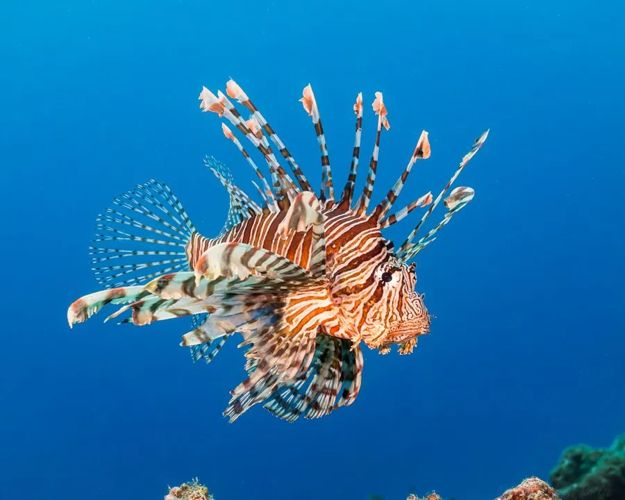

鱼类 · 动物界
狮子鱼 Pterois volitans

鳍条如狮子鬃毛般展开的珊瑚礁鱼，背鳍棘含毒，是著名的有毒鱼类，被引入大西洋后成为严重入侵物种。
- 分类
- 门脊索动物门纲硬骨鱼纲目鲉形目科鲉科属蓑鲉属
- 栖息环境
- 热带珊瑚礁和岩礁区，常隐蔽在礁缝与洞穴中，水深 1–60 m
- 地理分布
- 原产印度洋至太平洋，中国南海有分布；已入侵大西洋西岸、墨西哥湾和加勒比海
- 保护级别
- 暂无评估；中国未列入国家重点保护野生动物名录
物种志
狮子鱼体侧扁，头部和身体上长着许多棘状突起；背鳍、胸鳍和臀鳍的鳍条极度延长，展开时像狮子的鬃毛，因此得名。体色红褐与白色相间，形成醒目的条纹和斑点，宽大的胸鳍像两把扇子。成鱼体长一般 30–40 cm，最大记录约 47 cm。
狮子鱼是肉食性鱼类，捕食小鱼、虾蟹，捕食时会张开宽大的胸鳍把猎物逼到角落再一口吞下。它的背鳍、臀鳍和腹鳍上共有约 18 枚毒棘，棘基部连着毒腺，被刺后会产生剧烈疼痛、红肿，严重时出现呕吐和呼吸困难。狮子鱼原产印度洋至太平洋的珊瑚礁和岩礁区，中国南海也有分布；20 世纪 80 年代它被引入美国佛罗里达沿海后迅速扩散，如今已成为大西洋和加勒比海最严重的入侵鱼类之一，捕食大量本地珊瑚礁鱼类。它繁殖力极强，雌鱼每年可产卵约 200 万粒。目前没有IUCN 的正式评估，中国未将其列入国家重点保护野生动物名录。
形态与习性
- 食性捕食小鱼、虾蟹，用胸鳍把猎物逼到角落吞下
- 体长一般 30–40 cm，最大记录约 47 cm
- 毒性全身约有 18 枚毒棘，刺伤后剧烈疼痛、红肿
- 繁殖繁殖力极强，雌鱼每年可产卵约 200 万粒
- 栖息深度珊瑚礁、岩礁区，水深 1–60 m
- 性情白天多藏在礁缝中，遇敌时张开鳍条示威
趣味知识
- 狮子鱼身上有约 18 枚毒棘，被刺后的疼痛常被形容为“被钉子使劲扎”。
- 在美国加勒比海，它几乎没有天敌，当地甚至举办捕杀比赛来控制数量。
- 它捕食时会张开胸鳍把猎物围住，动作像撑开一把彩色雨伞。